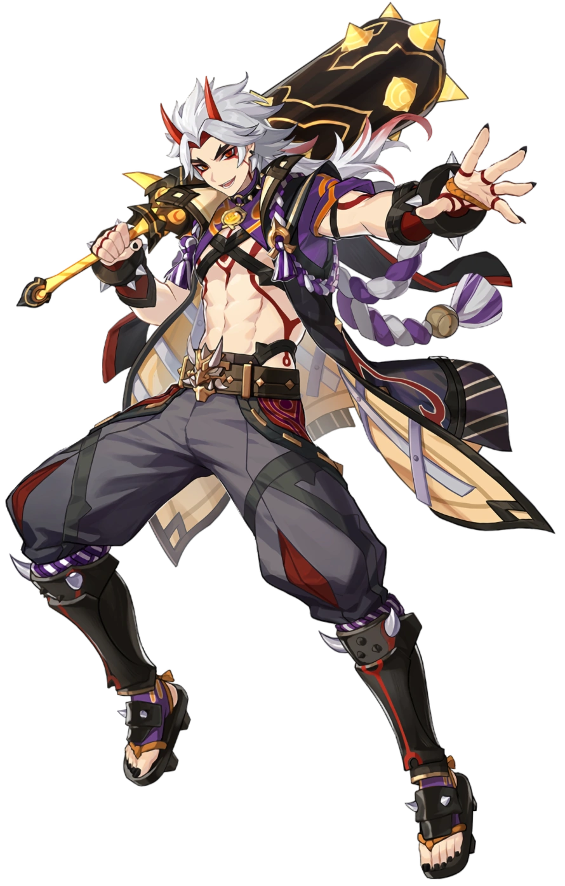

Husk of Opulent Dreams
Redhorn Stonetheresher

| LEVEL | HP | ATK | DEF | CRIT RATE |
|---|---|---|---|---|
| 20 | 3455 | 61 | 258 | 5% |
| 40 | 5779 | 102 | 431 | 9.8% |
| 50 | 7462 | 132 | 557 | 14.6% |
| 60 | 8951 | 158 | 668 | 14.6% |
| 70 | 10448 | 185 | 779 | 19.4% |
| 80 | 11954 | 211 | 892 | 24.2% |
| 90 | 12858 | 227 | 959 | 24.2% |
Using Royal Descent: Behold, Itto the Evil! provides Arataki Itto with further buffs to Superlative Superstrength.
After using Royal Descent: Behold, Itto the Evil!, each party member whose Element is Geo will decrease that skill’s CD by 1.5s and restore 6 Energy to Arataki Itto. A maximum of 6s CD can be decreased and 24 Energy restored in this manner.
Increases the Level of Masatsu Zetsugi: Akaushi Burst! by 3. Maximum upgrade level is 15.
While in the Raging Oni King state caused by Royal Descent: Behold, Itto the Evil!, Itto has 25% higher CRIT Rate against opponents with equal or lower HP percentage remaining than him.
Increases the Level of Royal Descent: Behold, Itto the Evil! by 3. Maximum upgrade level is 15.
Arataki Itto’s Charged Attacks deal 70% increased Crit DMG. Additionally, when he uses Arataki Kesagiri, he has a 50% chance to not consume stacks of Superlative Superstrength.
Normal Attack: Perform up to 4 consecutive strikes. When the 2nd and 4th strikes hit opponents, Itto will gain 1 and 2 stacks of Superlative Superstrength, respectively up to a max of 5 stacks. Triggering this effect will refresh the current duration of any existing stacks.
Additionally, Itto’s Normal Attack combo does not immediately reset after sprinting or using his Elemental Skill, “Masatsu Zetsugi: Akaushi Burst!”
Profile text
Weapon text
Artifacts text
Husk of Opulent Dreams
Redhorn Stonetheresher